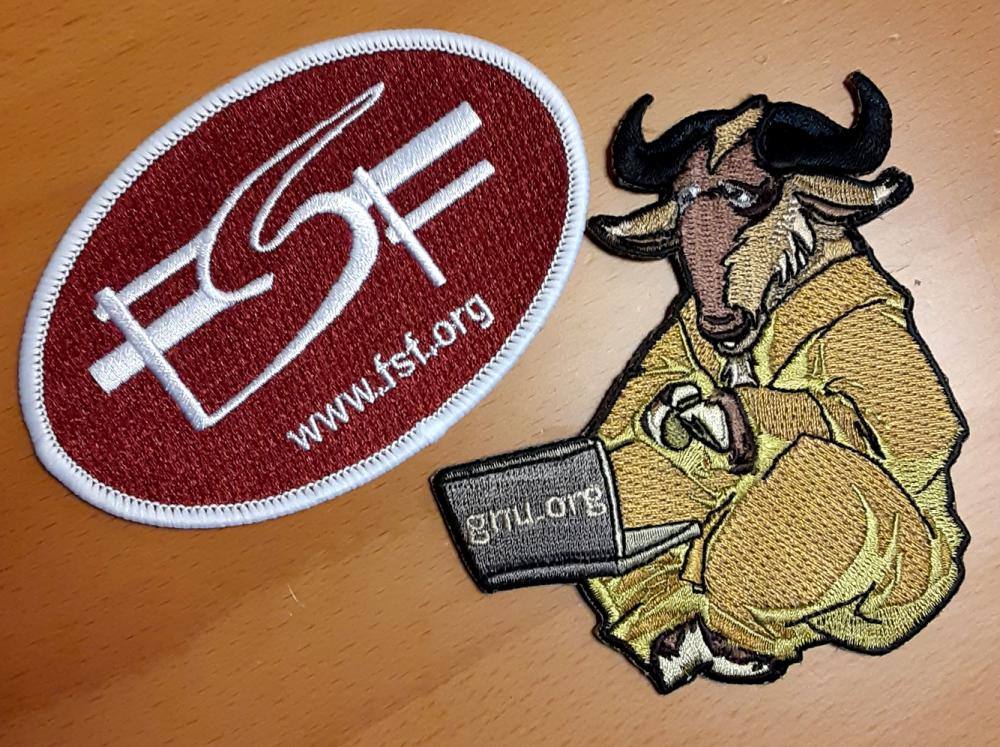

Richard Stallman is the founder of the free software movement, the GNU project, and the Free Software Foundation. He campaigns for software to be distributed in a manner such that its users receive the freedoms to use, study, distribute, and modify that software. Software that ensures these freedoms is termed free software. Stallman has written many essays on software freedom, and has been an outspoken political campaigner for the free software movement since the early 1990s. Stallman pioneered the concept of copyleft, a legal mechanism to protect the modification and redistribution rights for free software.
Stallman pioneered the concept of copyleft, which uses the principles of copyright law to preserve the right to use, modify, and distribute free software, and is the main author of free software licenses which describe those terms, most notably the GNU General Public License (GPL), the most widely used free software license. In 1989, he co-founded the League for Programming Freedom. Since the mid-1990s, Stallman has spent most of his time advocating for free software, as well as campaigning against software patents, digital rights management (which he refers to as digital restrictions management, calling the more common term misleading), and other legal and technical systems which he sees as taking away users' freedoms.
GNU Project
GNU is an extensive collection of free software, which can be used as an operating system or can be used in parts with other operating systems. Stallman launched the GNU Project in September 1983 to create a Unix-like computer operating system composed entirely of free software. He has been the GNU project's lead architect and organizer, and developed a number of pieces of widely used GNU software. The GNU operating system consists of GNU packages as well as free software released by third parties. The development of GNU made it possible to use a computer without software that would trample your freedom. The use of the completed GNU tools led to the family of operating systems Linux.
Free Software Foundation
The Free Software Foundation(FSF) is a non-profit corporation founded by Richard Stallman on 4 October 1985 to support the free software movement, a movement which tries to promote the universal freedom to distribute and modify computer software without restriction. The FSF was started in the Commonwealth of Massachusetts, United States of America. From its founding (when it started) until the 1990s, FSF's funds were mostly used to employ software developers to write free software for the GNU Project. Since the mid-1990s, the FSF's employees and volunteers have mostly worked on legal and structural issues for the free software movement and the free software community. FSF hosts software development projects on their Savannah website. FSF also maintains many of the documents that define the free software movement.